A single silk thread passes through the shuttle countless times before it slowly forms a complete image. A single shutter, in the flow of time, leaves behind one unrepeatable instant. These two ways of making, so different, answer the same question: how time is seen, and how it is kept.
From September 11 to 15, 2026, Time in the Warp and Weft: An Intangible Heritage Kesi Image Art Exhibition, presented by the premium consumer storage brand Lexar, opened at the Leica Gallery in Amsterdam, the Netherlands.
At the opening, Stephan Riediger, Leica's Global Head of International Distribution, joined Linda Warmerdam, manager and curator of the Leica Gallery Amsterdam, Su Dan, Lexar's General Manager for Europe, and Hao Naiqiang (Jingwei), the Kesi inheritor from Suzhou, China. International photography media such as PetaPixel, Digital Camera World, and Fstoppers, along with European photographers and image artists, gathered to feel the meeting of Chinese craft and contemporary images.
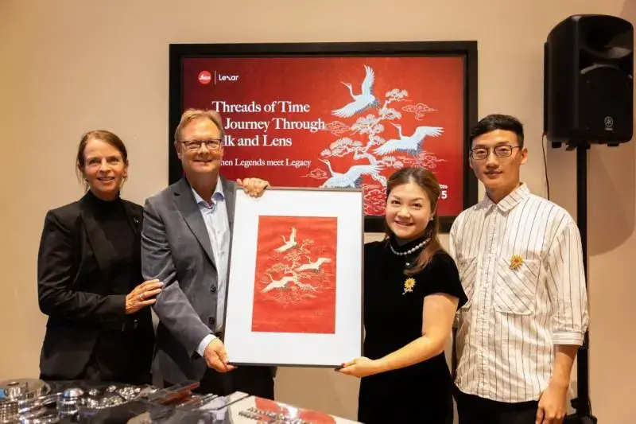
Image: At the Leica Gallery in Amsterdam, from left: Linda Warmerdam, manager and curator of the Leica Gallery Amsterdam; Stephan Riediger, Leica's Global Head of International Distribution; Su Dan, Lexar's General Manager for Europe; and Hao Naiqiang (Jingwei), the Kesi inheritor from Suzhou.
The exhibition brings together Huang Jing, the first Chinese photographer to win the Leica Oskar Barnack Newcomer Award, and Hao Naiqiang, the Kesi inheritor from Suzhou. Linda Warmerdam curated it. A thousand years of Kesi weave time in silk, a hundred years of Leica record time through the lens, and thirty years of Lexar guard time in storage. These three spans meet in one question: let beautiful moments be recorded, kept, and seen for a long time.
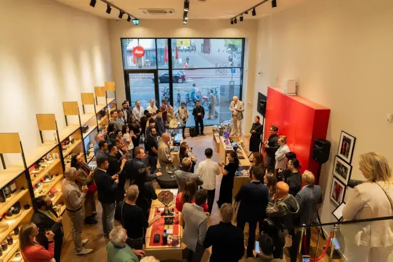
Image: Leica Gallery, Amsterdam, the Netherlands.
Lexar has long followed image creation and recording. This exhibition extends the brand's focus on recording and keeping into traditional culture. Kesi builds the years in warp and weft, photography fixes an instant through the lens, and storage keeps these works alive and shared. Together they form a chain from creation and recording to keeping and passing on, and they give a new voice in Amsterdam to cultural memory across places and eras.
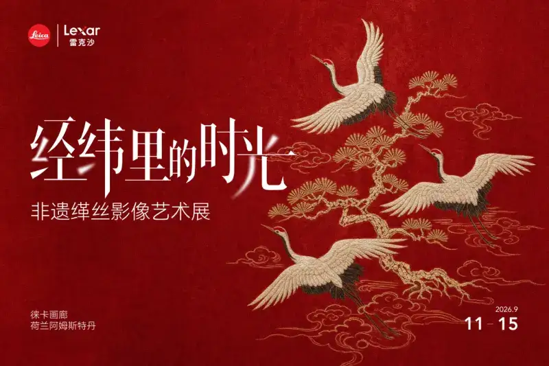
Kesi and photography: two ways of making images, two expressions of time
Kesi, also called ke-si, is one of the most representative crafts of Chinese silk weaving. Over a long time scale, it carries more than the history of Chinese silk. Kesi weaving is an ancient method, once made mainly of wool and linen, found in ancient Egypt, West Asia, and the eastern Mediterranean, and it spread to Europe and Asia. In the Han dynasty, woven wool fabrics reached Xinjiang along the Silk Road. By the Tang dynasty, as the technique joined Chinese sericulture and silk weaving, silk gradually replaced wool and linen, and Kesi with Chinese character developed. By the Song dynasty, the craft matured and moved from practical fabric toward a more pictorial and artistic expression.
In this sense, Kesi is itself the result of cultural exchange and local creation. Weaving knowledge from different regions traveled along ancient trade routes, met Chinese materials, techniques, and taste, and formed the Kesi art we know today. What it weaves is not only warp and weft, but also the long record of cultural exchange across Eurasia.
Its core technique, continuous warp and broken weft, requires the maker to weave sections of different colored weft and change the shuttle again and again on the same line. The image is not drawn quickly. It is built thread by thread, in color and density, by hand.
So a Kesi work shows not only the finished image but also the traces of the time it took. From afar it looks like a complete painting. Up close, the viewer sees the crossing threads, the transitions of color, and the structure built from countless small choices.
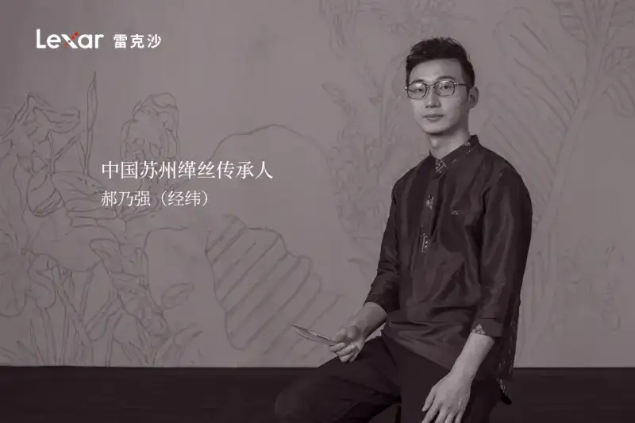
Image: Jingwei, born Hao Naiqiang, a Kesi artist based in Suzhou. He studied textile art and design at Soochow University and has worked in Kesi for more than ten years. Using Kesi as his medium, he goes beyond traditional copies and boldly explores cross-cultural work, turning Kesi from a traditional craft into a personal artistic voice.
People often first see a finished Kesi work, but for me, Kesi is more like a way of thinking in silk, Jingwei said. Its structure comes from tradition, and each work must answer the questions of color, rhythm, and form again.
For Jingwei, time is not only the years a work takes. It lives in the crossing threads, in each change of the shuttle and each drop of the thread, and in the slow making of an image from nothing.
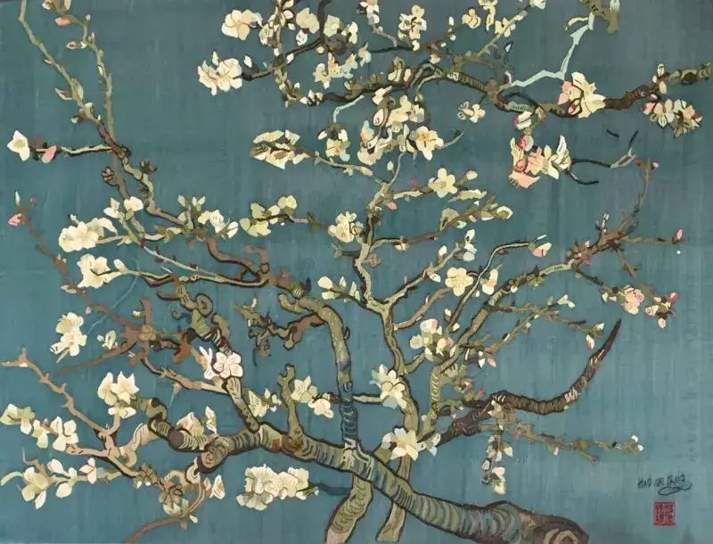
Image: Jingwei's Kesi work Van Gogh: Almond Blossom.
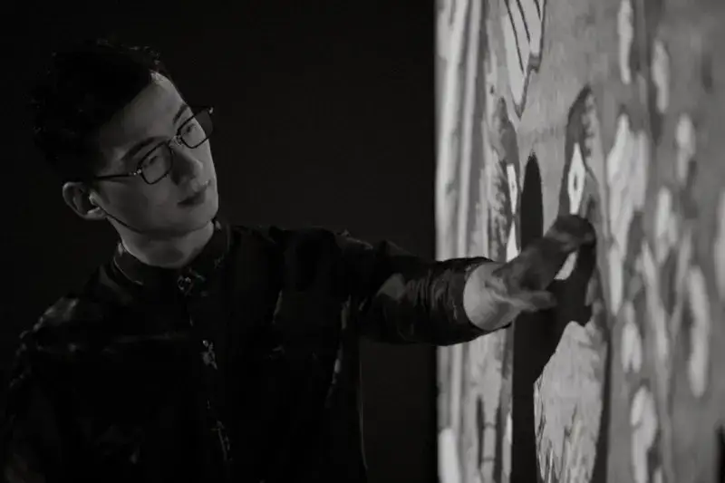
Image: The artist Jingwei with his work.
Unlike the slow making of Kesi, photography faces a flowing and brief reality. Huang Jing's work stresses intuitive seeing, and also framing, negative space, and restraint in the frame. Chinese painting, especially the freehand tradition, has long influenced his work. By cutting explanatory elements, he wants seeing to return to light, form, and space.
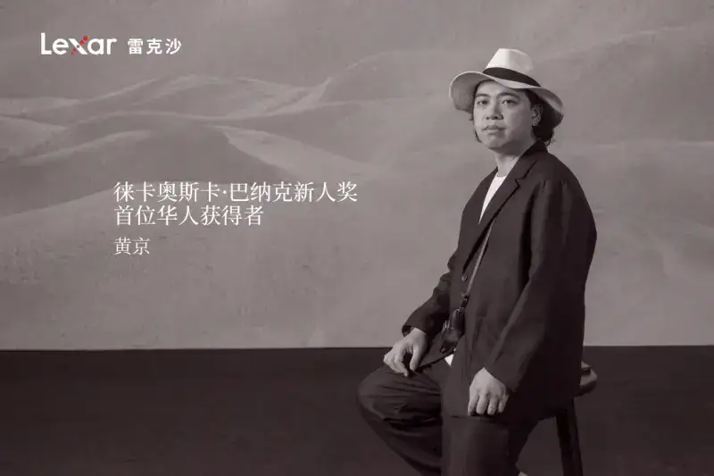
Image: Huang Jing, photographer and artist based in Shenzhen. He studied photography and digital art at the Guangzhou Academy of Fine Arts. In 2011, his series Pure of Sight won the Leica Oskar Barnack Newcomer Award, making him the first Chinese photographer to receive it.
In this project, Huang did not fully explain how a Kesi work is made, in the logic of a documentary. He focused on the real scenes he met in Suzhou: the silk threads and the loom in the studio, the hands at work, the light coming through the window, and the unspoken space between making and living.
I did not want to use photography to explain Kesi, Huang said. I wanted to answer what I truly met in Suzhou: the threads, the air, the light, and the unspoken space between things.
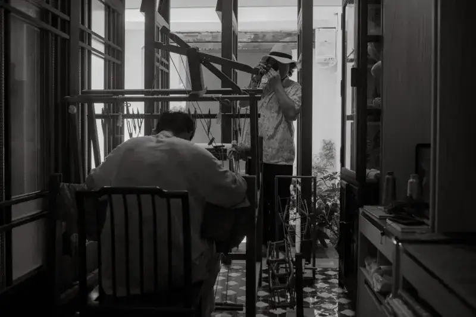
Image: The photographer Huang Jing at work.
One accumulates time in silk, and one cuts an instant from time.
One creates an image through material, and one discovers an image through seeing.
The two makers handle time in different ways, and both point to a more open visual experience.
Meeting at the Leica Gallery: traditional craft and contemporary images reflect each other
Time in the Warp and Weft is not a simple combination of heritage plus photography. The curator, Linda Warmerdam, places the craft of Kesi, Jingwei's practice, and Huang's photos in one space, so the two independent visual languages echo each other in framing, texture, color, light, and the rhythm of looking.
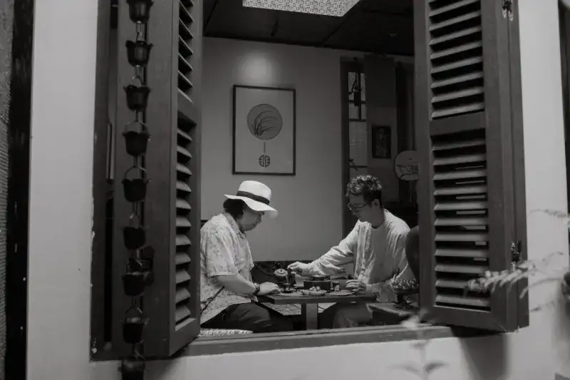
Image: The artists Jingwei and Huang Jing.
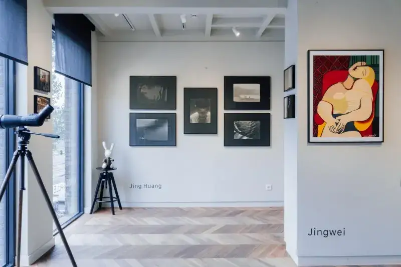
Image: Leica Gallery, Amsterdam, the Netherlands.
The show does not force a one-to-one match between photography and Kesi. Photography is not a manual for Kesi, and Kesi is not a backdrop for photography. Each keeps its own complete voice, and the viewer is invited to find the links between material and light, image and space, and instant and accumulation.
Warmerdam said: I wanted to put two independent visual practices together without making one the servant of the other. They do not need to explain each other. The real conversation arises from the material, the light, the rhythm, and the time the work asks the viewer to give.
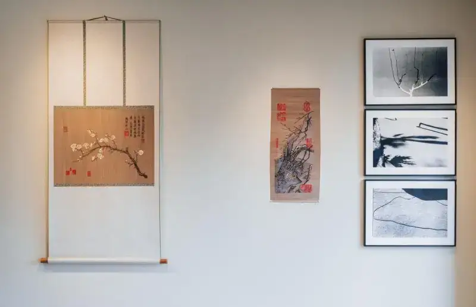
Image: Jingwei's Kesi work and Huang Jing's photos shown together at the Leica Gallery.
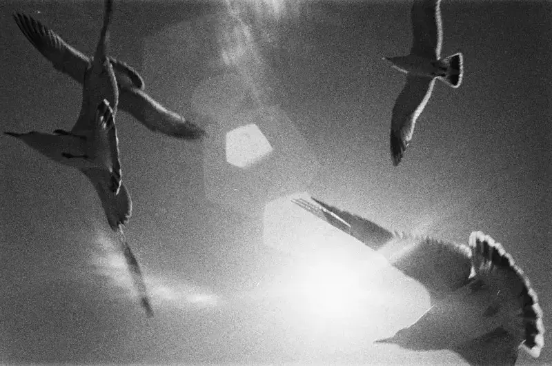
Image: A photograph by Huang Jing.
An exchange that began in a Suzhou studio has crossed distance to the Leica Gallery in Amsterdam. For Kesi, which itself carries the marks of Eurasian cultural exchange, the journey from Suzhou to Amsterdam is an echo across time and place. A weaving art that once traveled and merged along ancient routes now comes to Europe as Chinese intangible heritage, to be seen and understood in a new cultural space. Photography becomes an open language linking maker, material, and viewer. Tradition and contemporary, East and West, hand and image gain new ways to be understood in this pairing.
Lexar: guarding real creation that cannot be repeated
For Lexar, this exhibition is also a discussion about keeping.
Before a photo becomes an exhibition work, a cultural record, or an image seen again and again, it is first a data file produced in an instant and kept safely. Lexar has long served the shooting, transfer, and archiving of photographers, video makers, and professional creators, to give real creation steady, reliable storage.
In Time in the Warp and Weft, keeping is read on a longer scale. Kesi keeps the time the maker put in, photography keeps the instant of seeing, and storage lets these works cross devices and time, to be shared, seen, and remembered.
As images are produced and generated at an unprecedented speed, creation shaped by real people, real scenes, and real time becomes more precious.
Silk thread gives time a shape;
photography makes the instant into seeing;
and storage lets the creations and memories that happen only once keep on being seen.